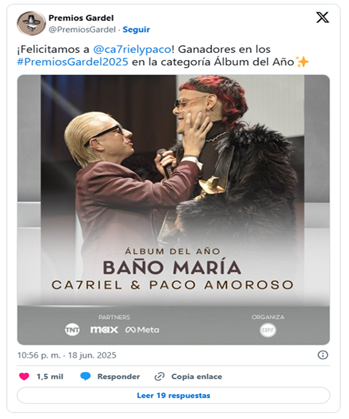

Baño maría le valió a Ca7riel & Paco Amoroso el Premio Gardel a Álbum del año, la categoría más importante de los Premios Gardel que se entregaron este miércoles 18 de junio en el Teatro Coliseo de Buenos Aires. La estatuilla fue entregada por Diego Zapico, presidente de CAPIF. Los artistas se coronaron como los grandes ganadores de la noche al alzar un total de siete premios por su disco debut del proyecto en conjunto. Ca7riel & Paco Amoroso resultaron vencedores también en las categorías Mejor álbum pop urbano, Mejor videoclip largo, Ingeniería de grabación, Mejor colaboración urbana (“Todo roto” junto a Nathy Peluso), Mejor diseño de portada y Mejor colaboración (“Agua” junto a Tini).
Baño maría salió en abril de 2024 a través de 5020 Records y es el primer disco en conjunto de Ca7riel & Paco Amoroso. El álbum está conformado por 12 canciones (de las que participaron más de diez productores) y cuenta con las colaboraciones de dos íconos pop nacionales: Lali y Tini. Musicalmente pasa por la electrónica, el dembow, el pop raver, el r&b, y el dum & bass.
Si bien el recibimiento del álbum al momento de su lanzamiento fue mixto, el estreno en octubre del Tiny Desk impulsó la internacionalización de la dupla, que rápidamente se volvió furor aquí y allá. Después de su paso por el reconocido programa español El hormiguero, Ca7riel & Paco Amoroso anunciaron su participación en Coachella que devino también en su aparición en el programa de Jimmy Fallon. Para ese entonces, los argentinos habían publicado un EP sucesor:Papota.
En nuestra crítica del disco, al momento de incluirlo dentro de los 50 mejores discos del 2024, escribimos: "Las canciones de Baño maría no se alejan mucho de los rasgos característicos del dúo: el olfato para las melodías pegadizas y letras que van desde la humorada hasta la ostentación. Justamente, las sesiones de grabación con productores de primera línea de la industria tuvieron lugar en la ciudad de Miami, cuna de la música mainstream de nuestro tiempo, marcando una notoria diferenciación tanto con las otras producciones nacionales del año como con el propio pasado del dúo".
Otra de las ganadoras de la ceremonia fue Lali, quien con "Fanático" se llevó tres premios: Canción del año, Mejor canción pop y Mejor videoclip corto. Trueno completó el podio con tres premios también: Mejor álbum urbano (El último baile) y "Real Gangsta Love" (Grabación del año y Mejor canción urbana).
Dillom resultó vencedor en la categoría Mejor álbum de rock alternativo por Por cesárea, Massacre en Mejor álbum de grupo rock por Nueve y Conociendo Rusia en Mejor álbum de pop rock por Jet Love.
etiquetas
Detonantes: "Nos representa esa esencia cruda y natural del rock"
Johnny Marr explica por qué rechazó la reunión de The Smiths: "No soy tonto"